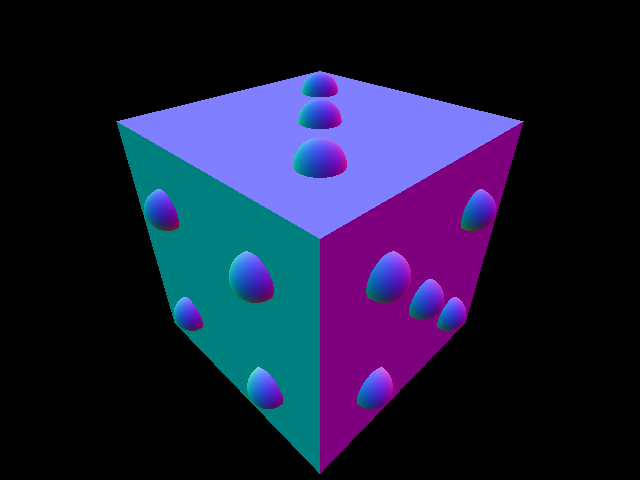

Human Powered Submarine Club - Electronics
Nov 2024 - Present
Arduino (C++), CAD
I joined UCSD's Human Powered Submarine club's electronic team. I impemented a sensor to measure and display the RPM of the sub's propellor using an arduino with a Hall effect sensor and a 3D-printed cuff containing magnets of alternating polarity. The hall effect sensor measures the magnetic strength of the magnet cuff as it's turning, and is able to detect each time a magnet passes by it. Using this, the arduino then calculates an RPM and sends that to an LCD screen which displays information on the sub's sensors. Because the Hall effect sensor needs a fast response time, I implemented a scheduler in the arduino that allows the RPM sensor to do a calculation using the whole CPU for a number of frames, then allows the other sensors to do their respective jobs for a number of frames, alternating. I also designed and 3D-printed a mount for the sensor using CAD.
The files can be found at this Github repository, {LINK}
(learn more...)

(normal shading)
Return to Projects